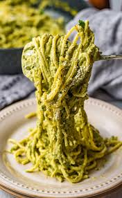
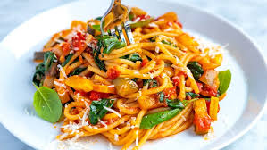
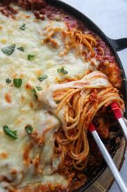
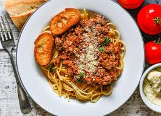
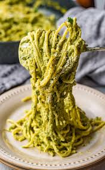
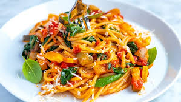
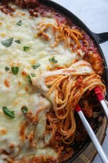
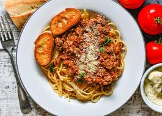

Classic Marinara
⏱️ 20 minutes
A timeless Italian favorite with rich tomato sauce, fresh garlic, and aromatic basil. Perfect for a quick weeknight dinner.
EASYGarlic Butter
⏱️ 15 minutes
Simple yet incredibly flavorful with melted butter, sautéed garlic, and a hint of red pepper flakes for a perfect bite.
EASYCarbonara
⏱️ 15 minutes
Creamy and indulgent with crispy bacon, eggs, and Parmesan cheese creating a silky sauce that coats every strand.
EASYLemon Parmesan
⏱️ 12 minutes
Light and refreshing with bright lemon zest, quality olive oil, and fresh Parmesan for a zesty Mediterranean twist.
EASYAglio e Olio
⏱️ 12 minutes
A classic Roman dish with just garlic, olive oil, and chili flakes. Minimalist ingredients, maximum flavor.
EASYBolognese
⏱️ 25 minutes
Hearty meat sauce with ground beef, tomatoes, and Italian herbs simmered to perfection for a satisfying meal.
EASYPesto
⏱️ 10 minutes
Fresh basil pesto with pine nuts, garlic, and Parmesan creates a vibrant green sauce bursting with herby flavor.
EASYTomato Basil
⏱️ 18 minutes
Fresh tomatoes and basil come together with olive oil for a light, summery pasta that celebrates simple ingredients.
EASY